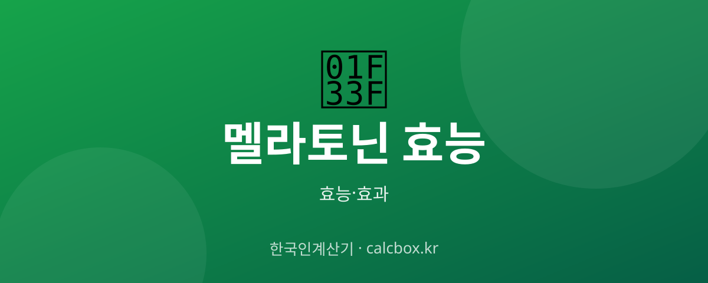

멜라토닌 효능 — 불면·시차적응에 좋은 이유와 복용법·주의점
잠 못 드는 밤의 해법으로 자주 언급되는 멜라토닌. 수면 호르몬이 실제로 어떻게 작용하고 언제 먹어야 하는지 정리했습니다.

멜라토닌 개요 — 어떤 것인가요?
멜라토닌은 뇌의 송과선에서 분비되는 수면 유도 호르몬입니다. 어두워지면 분비가 늘어 '잘 시간'이라는 신호를 보내고, 밝은 빛은 분비를 억제합니다. 국내에서는 전문의약품으로 분류돼 처방이 필요합니다.
멜라토닌 주요 효능·효과
- 수면 유도 — 잠드는 데 걸리는 시간을 줄이는 데 도움을 줄 수 있습니다.
- 시차 적응 — 해외여행 시 무너진 수면 리듬을 재조정하는 데 활용됩니다.
- 수면 리듬 조절 — 교대근무 등으로 흐트러진 생체 리듬 관리에 쓰입니다.
섭취·사용 방법과 권장량
보통 취침 30분~1시간 전에 소량 복용합니다. 용량은 낮게 시작하는 것이 원칙이며, 국내에서는 처방을 통해 복용해야 합니다.
주의사항·부작용
낮 졸림·두통·어지럼이 있을 수 있고, 복용 후에는 운전을 피하세요. 임산부·수유부·자가면역질환자는 특히 주의가 필요합니다. 근본적 불면은 카페인·빛·스트레스 관리 등 수면 위생 개선이 우선입니다.
자주 묻는 질문 (FAQ)
Q. 멜라토닌은 중독되나요?
일반적으로 강한 의존성은 낮다고 알려져 있지만, 장기·고용량 사용은 권장되지 않으며 국내에서는 전문의약품으로 처방에 따라 사용해야 합니다.
Q. 멜라토닌은 언제 먹어야 하나요?
보통 취침 30분~1시간 전입니다. 복용 후 밝은 화면(스마트폰)을 보면 효과가 떨어질 수 있으니 빛을 줄이세요.
Q. 멜라토닌으로 안 되면 어떻게 하나요?
카페인 제한, 일정한 기상 시간, 취침 전 빛 차단 등 수면 위생을 먼저 점검하고, 불면이 지속되면 수면 클리닉 진료를 받는 것이 좋습니다.